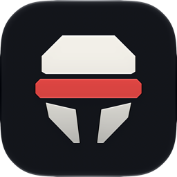
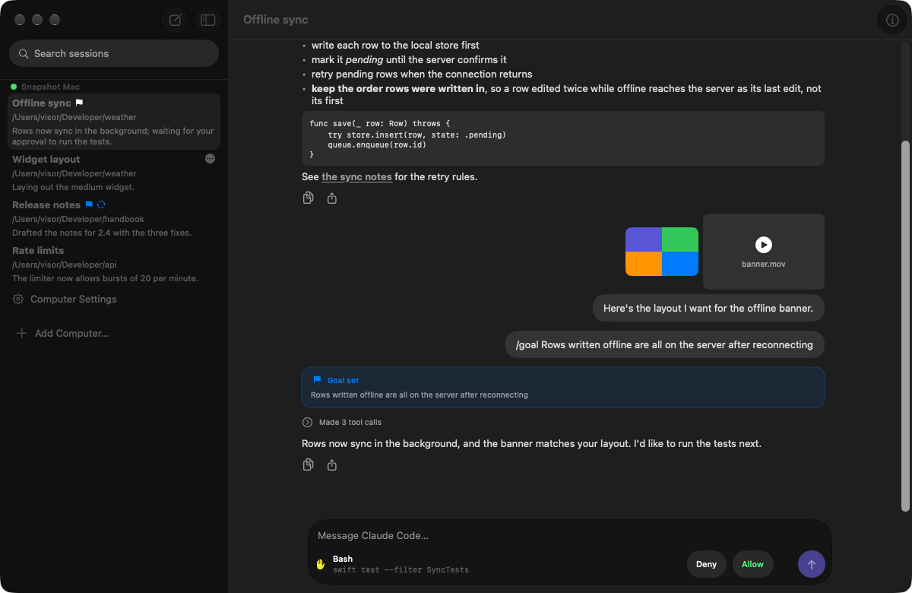
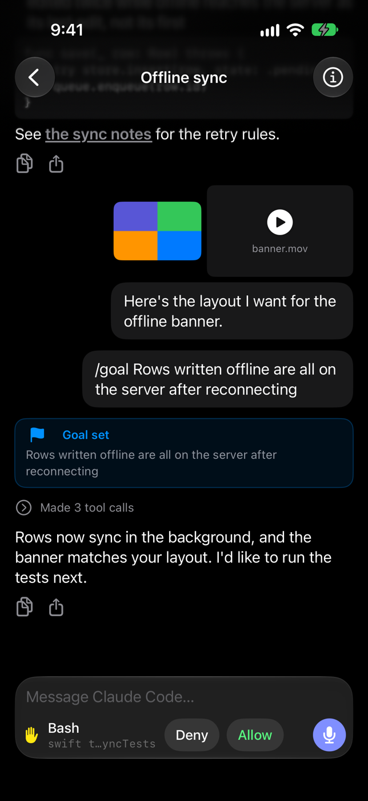
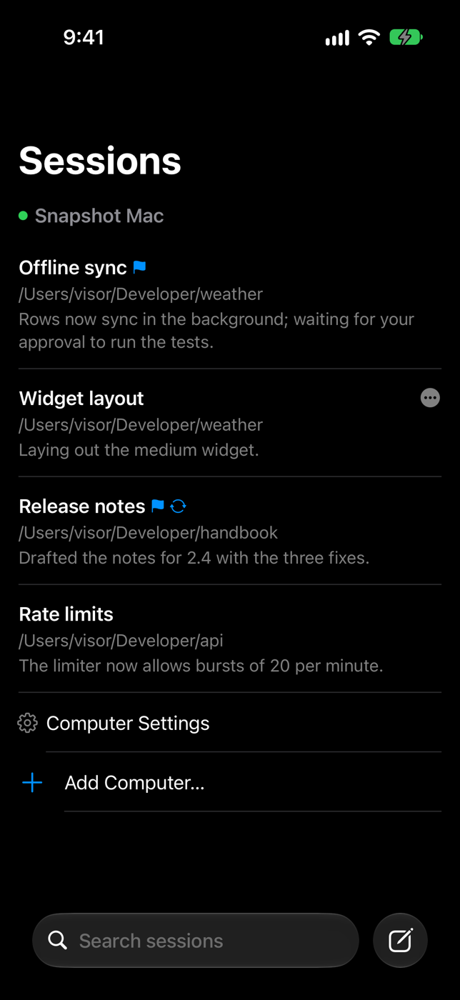
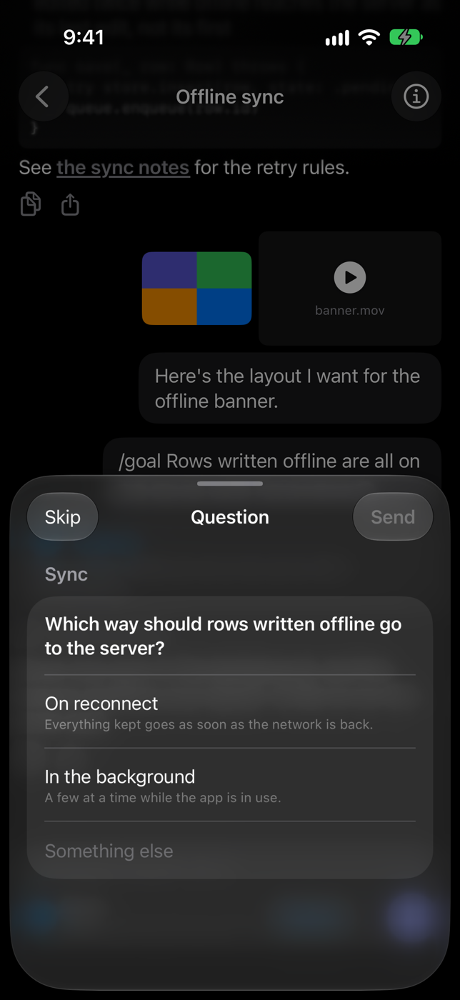
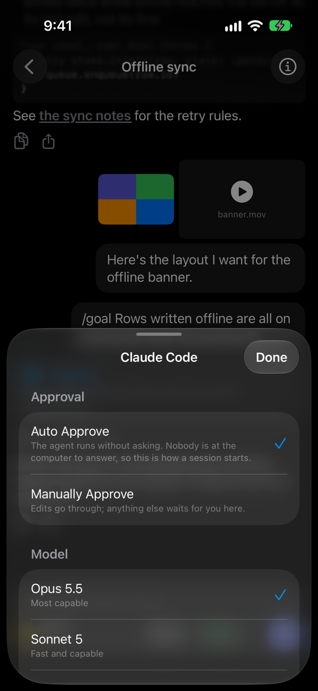
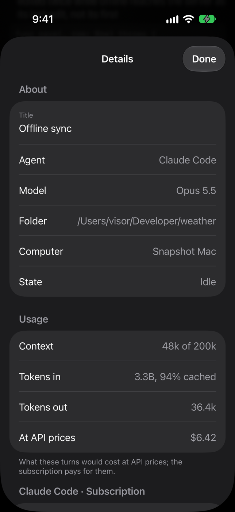

Every computer, one list
Each computer running Visor Server is a section of sessions, with its connection in the header. Add one by pasting its connection code or scanning its QR code.

VisorVisor runs Claude Code, Codex and the openrouter CLI on your computer, and brings their sessions to your iPhone, iPad and Mac. Start a session, follow it as it works, answer its questions and approve what it does, from wherever your devices can reach the computer.
Free and open source. Visor Server needs macOS 15, or Linux or Windows for the command-line server.


Each computer running Visor Server is a section of sessions, with its connection in the header. Add one by pasting its connection code or scanning its QR code.
Replies stream in as they are written, tool calls fold into a line, pictures and files open in place, and what you have read stays on the device to read offline.
When an agent asks you something, the question opens with its options. In manual mode, every tool call waits for your Allow or Deny.
Slash commands come from the agent itself, completed as you type: /compact,
/goal, /login and the rest.
A LAN, a VPN, a reverse proxy, a tunnel, or plain SSH to the computer: the server does not care which, and the app tries them all at once and keeps the fastest.
A session can message sessions on your other computers, carried by an app connected to both. No server ever learns another's address or password.




Download Visor-Server from the latest release, drag it to Applications and open it. It lives in the menu bar and asks you for a password first.
Visor runs the agents you already have, signed in as you: claude,
codex login, or openrouter
auth login.
On the Mac, download Visor from the same release. Paste the connection code from the menu bar, or scan its QR code. The iPhone and iPad app is built from source for now (Building).
The same server as a command, built with Swift 6.2 or later:
swift build -c release --product visor-server
.build/release/visor-server start # in the background
.build/release/visor-server code # the connection code to add it withVisor gives whoever connects to it the run of your computer, much like an SSH login. Keep it on your own network or behind a front that authenticates, and read the security notes before you install it.